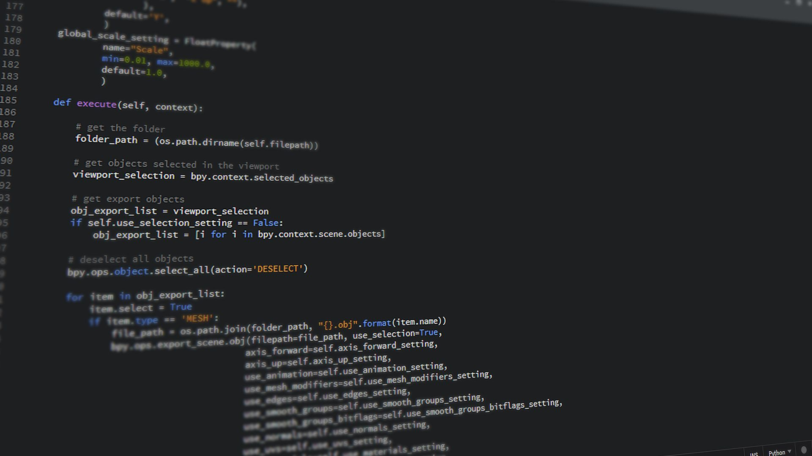
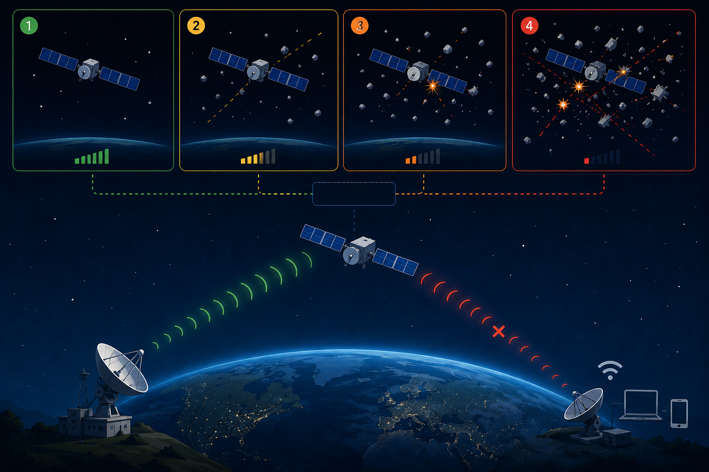
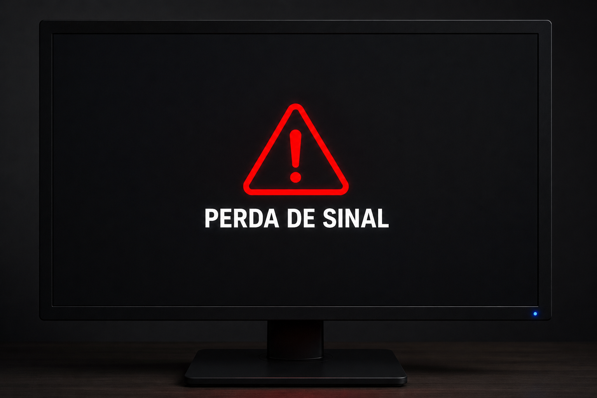

O aumento do lixo espacial ameaça sistemas de comunicação via satélite, causando interferências, falhas e instabilidades em serviços essenciais globais modernos.
A solução monitora, simula e prevê instabilidades na comunicação orbital, identificando riscos e gerando alertas preventivos para reduzir impactos críticos.
Utilizado para desenvolver o sistema responsável pelos cálculos e simulações, processando dados relacionados à estabilidade das comunicações orbitais.
Também realiza o armazenamento dos resultados gerados, permitindo consultas futuras e acompanhamento das análises realizadas pelos usuários.
Utilizado para representar visualmente o comportamento do sistema, demonstrando diferentes níveis de estabilidade e interferência orbital monitorados.
Por meio de LEDs e componentes eletrônicos, fornece uma visualização rápida dos estados identificados durante as simulações.


Monitorar continuamente a estabilidade das comunicações orbitais, identificando interferências que possam comprometer a transmissão segura e eficiente de sinais.

Simular cenários de interferência espacial, avaliando impactos do lixo orbital na qualidade e confiabilidade das comunicações via satélite.

Prever riscos de instabilidade nos sistemas monitorados, utilizando análises de dados para antecipar falhas e interrupções em serviços essenciais.

Gerar alertas preventivos em tempo real, permitindo rápida identificação de situações críticas e adoção de medidas adequadas.

Contribuir para a segurança das comunicações orbitais, fortalecendo a confiabilidade de serviços essenciais dependentes de tecnologias satelitais modernas.
Empresas de telecomunicações utilizam satélites para garantir conectividade, enquanto o Nebula Noise monitora interferências e reduz perdas de sinal.
Operadores de satélites acompanham condições orbitais constantemente, enquanto a plataforma fornece simulações, análises e alertas para prevenir problemas.
Órgãos responsáveis pelo monitoramento espacial utilizam dados gerados para apoiar estudos, planejamentos e estratégias de mitigação de riscos.
Setores de aviação e navegação dependem de sinais via satélite, onde instabilidades podem comprometer operações e segurança.
Universidades, pesquisadores e estudantes podem utilizar a plataforma para aprendizado, análise orbital e compreensão dos impactos do lixo espacial.
Organizações ambientais e meteorológicas podem utilizar os dados gerados para acompanhar impactos de interferências orbitais em satélites.
O sistema identifica antecipadamente possíveis interferências, contribuindo para manter a qualidade e continuidade dos serviços via satélite.
O monitoramento e as simulações permitem prever riscos e adotar medidas preventivas antes da ocorrência de interrupções.
Os alertas e análises da plataforma permitem decisões mais rápidas e assertivas diante de situações críticas e riscos.
O projeto amplia a compreensão dos impactos da atividade orbital nos sistemas de comunicação, auxiliando na mitigação de riscos.
A solução aumenta a confiabilidade de infraestruturas dependentes de satélites, incluindo internet, GPS, telefonia, navegação e monitoramento climático.
O Nebula Noise apoia estudos educacionais e científicos sobre comunicação orbital, lixo espacial e tecnologias aeroespaciais modernas.
Ajuda a manter serviços de internet e telefonia estáveis, reduzindo falhas de comunicação causadas por interferências em satélites.
Contribui para maior precisão em aplicativos de localização, transportes, entregas e navegação dependentes de sinais satelitais.
Auxilia na estabilidade das comunicações aeronáuticas, reduzindo riscos operacionais e aumentando a segurança dos voos realizados.
Favorece a transmissão confiável de dados meteorológicos, melhorando previsões climáticas e acompanhamento de eventos ambientais extremos.
Permite estudar impactos do lixo espacial nas comunicações modernas, incentivando pesquisa, aprendizado e desenvolvimento tecnológico contínuo.
Auxilia no monitoramento de sistemas essenciais dependentes de satélites, reduzindo riscos e fortalecendo a continuidade operacional.